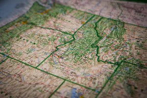

🥞Saturday = Preston Pancakes in the Park! 9:00 a.m. Saturday at the city park pavilion.
Welcome to the Scoopanator!
Come get the scoop!
Menu
Home
Preston
Soda Springs
Fish Haven
Storm Center
Gallery
Preston Idaho
Our towns!

The Scoopanator
📍304 N Main St, Pocatello, ID 83204
📞(248)434-5508
📧scoopascoopa@notreal.com